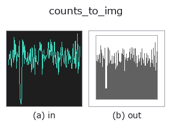

bridge op• Datenarten: counts → image
• Aufruf: fullseye.apply(img, "counts_to_img", a=0.5, b=0.5) (das 2-D-Modell ist ein Bild plus zwei skalare Regler a,b∈[0,1])

*Die Abbildung ist die tatsächliche Ausgabe auf einer synthetischen 128×128-Eingabe. Links Eingabe, rechts Ausgabe. Punktwolken als Draufsicht-Streudiagramm (Helligkeit = z), 1-D-Reihen als Linie, Volumen als Maximum-Projektion entlang z, Videos als mittleres Bild, komplexe Bilder als Betrag; Rückgabewerte, die kein Bild ergeben, werden als Werte gezeigt.*
Regler a durchfahren (0,1 / 0,5 / 0,9, der andere Regler auf Standard):
▸ counts_to_img: knob a sweep (docs site)
Regler b durchfahren (0,1 / 0,5 / 0,9, der andere Regler auf Standard):
▸ counts_to_img: knob b sweep (docs site)
Stufen (die vorangehenden Ops → dieser Op, von links nach rechts):
▸ counts_to_img: stages (docs site)
Auf anderen Bildern (synthetische Szene / Foto / Münzen. Obere Reihe: Eingaben, untere Reihe: deren Ausgaben. Regler auf Standard):
▸ counts_to_img: other inputs (docs site)
> Für diesen Operator gibt es noch keine Übersetzung. Es folgt der Originaltext unverändert.
非負整数の 1-D カウント列を棒グラフにして画像へ戻す。
`counts` を画像に落とせる op は 1 本も無かった(作る op は 13 本ある)。
既定を棒にしてあるのは、カウントが整数の度数だからで、折れ線で結ぶと
「間の値」が在るように見えてしまう。
• `a → 縦軸の余白(signal_to_img` と同じ式)。
• `b → 描き方。b < 1/3 で**折れ線**、< 2/3` で棒(既定)、それ以上で
点。`signal_to_img` と並びが違うのは、既定のノブ 0.5 でその型に
素直な描き方になるようにしているから —— カウントは棒が素直。
• 返り値: `(128, 128)` float64。
• Leitfaden zur Familie gallery2d_bridge
• Katalog der Beispieldaten (Download-URLs / Lizenzen) — 2-D nutzt skimage.data (BSD/Public Domain) plus synthetische Bilder, 3-D nennt Download-URLs echter Datenquellen (Stanford, PDS, …).
• Herkunft und Literatur der Operatoren — die Quellen der Forschung/Verfahren, auf denen diese Operatorfamilie beruht.
• Der kanonische Algorithmus (Autor, Jahr) und seine Anwendungen stehen im Familienleitfaden oben.
Das Programm unten ist nachweislich lauffähig (gleiche Eingabe wie die Abbildung). In der Studio-Hilfe wird dieser Block zu Schaltflächen, die es sofort laden und ausführen.
img_to_counts 0.50 0.50 counts_to_img 0.50 0.50
▸ Load this pipeline · Load & run
• gallery2d_bridge — py -3.11 examples/gallery2d_bridge.py
image als Eingabe)identity · gaussian · mean_box · bilateral · unsharp · median · min_filter · max_filter
bridge)img_to_points · img_to_keypoints · img_to_signal · img_to_projection_profile · img_to_counts · img_to_matrix · img_to_video · img_to_volume
*Provenance: ops.py — 2D Operator-Registry. Diese Notiz wird von tools/opdocs.py md erzeugt (nicht von Hand bearbeiten).*
© 2026 Kazufumi Furuse — Fullseye operator documentation. Licensed under Apache-2.0.
{kind=link}
{kind=link}
{kind=link}
{kind=link}